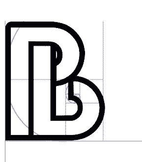

Logo Design
Low to High Fidelity
Intro
The goal was to familiarize myself with new design techniques through the creation of a unique and personal logo. I used a combonation of Photoshop, Illustrator and After Effects to achive the final results and along the way learned new and faster techniques to go through the low to high fidelity process of creating a logo.
Steps
1. First thing was creating an idea. I wanted to combine the two letters of my name to form a final big B. I used sketches and Photoshop to roughout the plan, as seen in the low fidelity sketch.
2. I experimented more with stroke and came up with a design that felt good in Photoshop. I showed this idea to colleagues to gauge their thoughts, and used some of thier suggestions in the revised version to create the high fidelity design.
3. I took the design into Illustrator and created a path, so I could scale the stroke and make adjustments as needed.
4. Using the path I created, I split it up into two parts per letter and imported it into After Effects. I experimented around to achive the effect I was going for and settled on trim paths to follow the path at specific keypaths.
5. After various minor adjustments, I have the final After Effects image which is perfect for video intros.
Low Fidelity
Medium Fidelity

High Fidelity

Parker Bomar - 2018